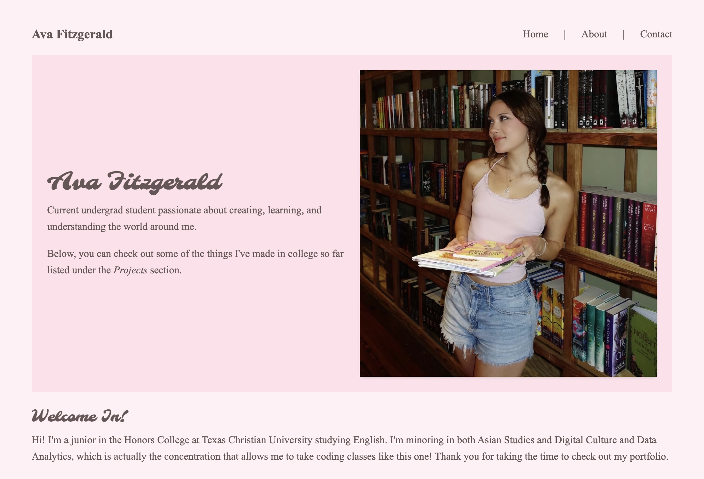

Welcome In!
Hi! I'm a junior in the Honors College at Texas Christian University studying English. I'm minoring in both Asian Studies and Digital Culture and Data Analytics, which is actually the concentration that allows me to take coding classes like this one! Thank you for taking the time to check out my portfolio.
Just So You Know...
Though I've taken an intro level Python course before, this is my first time working with HTML, CSS, and Javascript. Thus, this portfolio (and a lot of the projects linked within) are very much works in progress! This whole process is about learning different web development concepts and creating an accessible, curated space to share my work with the world.
If you're interested in reading more about my background and personal life/interests, I have a dedicated page for that; click on the About tab in the navigation bar above.
Skills
-
HTML
Semantic structure, accessible links, captioned figures.
-
CSS
Flexbox, CSS Grid, typography, and colors.
-
Canva
Slide decks and presentations, basic video editing, brand style guides, and custom color palettes.
Projects
-
Favorites Tracker
I learned JavaScript through making an app to keep track of some of my favorites things and places; it uses live search, filtering by category, and stores my favorites so I can find them on the next visit. Try the Favorites Tracker out for yourself!
-
Are They Gay? Homosocial Bonds Among Knights in Arthurian Literature
My final research paper into the social impacts of chivalry as evidenced by Arthurian literature. I wrote this for a class I was taking under Dr. Jill Havens called "King Arthur: Violence and Chivalry".
-

Personal Portfolio
The site you're reading, built from scratch in HTML and CSS (and made with love).
Contact
The best way to reach me is by email!